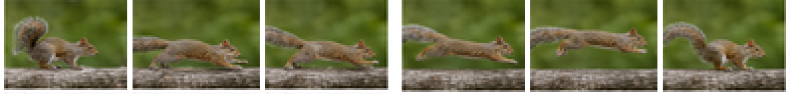
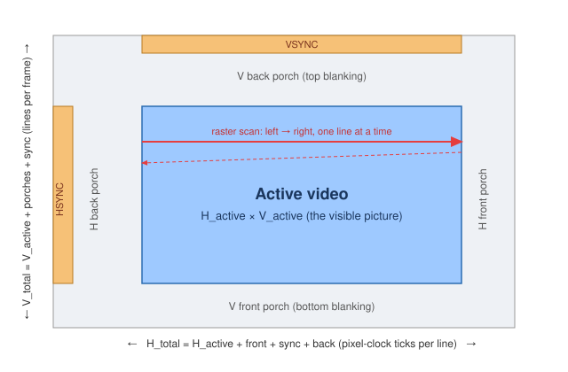
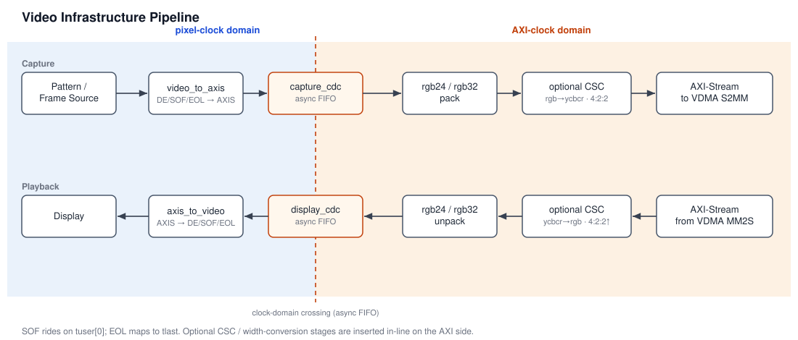

A photograph is easy: a grid of pixels sitting still. Video is the same grid, but now it has to move — a new picture every sixteen milliseconds or so, forever, without ever stuttering. That single requirement, never stop, is what makes video interesting in hardware. The maths of a pixel is trivial; the hard part is keeping a river of pixels flowing across clock domains, through memory, and onto a screen with no gaps.
That is the mental model I like to keep: video is pixels that must never stop. A CPU can wait. A bus transaction can stall. A software thread can sleep. But a camera sensor and a display timing generator are ruthless little metronomes. When the pixel clock says the next active pixel exists, the hardware either captures it, displays it, or loses it.
In this post I want to build the model from the ground up: what a frame really is, why we throw away colour on purpose, how a frame is scanned in time, where the pixel clock comes from, and how all of that is bridged onto an AXI-Stream fabric so a System-on-Chip can actually carry it. The examples come from verilaxi, my UVM-free SystemVerilog video and DMA library, and they use two friends as test images: a seagull and a squirrel.
We will stay deliberately close to hardware. Not just “what is YCbCr?”, but what signal changes. Not just “what is blanking?”, but which counter emits active_video, hsync, vsync, sof, and eol. The aim is to end with enough intuition to read a video RTL block diagram without it looking like a bag of acronyms.
A frame is just numbers — until it has to move
A colour frame is a width × height array of pixels, each pixel three 8-bit numbers: red, green and blue. Here is one frame of our seagull, 320×296 pixels:
Figure (1): a single RGB frame (the seagull).{kind=link}
Now make it a video. A video is nothing more than that frame, repeated and slightly changed, many times per second. Crop six consecutive frames of a running squirrel and lay them side by side and you can see the motion that the eye will reassemble into movement. This is also why older image-processing blocks such as the Sobel edge detector become more interesting in video: the problem is no longer just computing one image, but sustaining that computation frame after frame.
{kind=link}

Figure (2): six frames over time — this is all “video” really is.Let us count the cost. One 1080p frame is 1920 × 1080 × 3 = about 6.2 MB. At 60 frames per second that is 373 MB every second, or roughly 3 Gbit/s, and that is just one stream. This number is the reason every decision that follows exists: colour spaces, subsampling, careful clocking and dedicated DMA engines are all in service of moving that river without dropping a drop.
| Format | Bytes / pixel | 1080p60 payload bandwidth |
|---|---|---|
| RGB888 / YCbCr 4:4:4 | 3 | ~373 MB/s |
| YCbCr 4:2:2 | 2 | ~249 MB/s |
| YCbCr 4:2:0 | 1.5 | ~187 MB/s |
Table (1): payload bandwidth only — no blanking, no packet overhead, no memory bursts, no cache lines. Real systems still need margin.
This is also why small 8×4, 32×16 and 64×48 tests are useful. They let the RTL prove pixel order, line ends, frame markers and corner cases quickly. They are not pretending to model a final 1080p memory volume; they are making the bugs cheap to find before the same logic is asked to move hundreds of megabytes per second.
Throwing colour away on purpose: YCbCr
The human eye is more sensitive to light variation than to colour variation. We can exploit that, but first we have to separate brightness from colour, which RGB does not do. The YCbCr colour space splits a pixel into luminance Y (brightness) and two chrominance differences, Cb (blue–luma) and Cr (red–luma). I covered the conversion and its shift-and-add hardware in detail in an earlier post, RGB to YCbCr conversion; in verilaxi it is the snix_video_rgb_to_ycbcr / snix_video_ycbcr_to_rgb pair.
The hardware style is the same idea as the older Sistenix RGB-to-YCbCr implementation: avoid general multipliers when fixed coefficients can be approximated with shifts and additions. For an 8-bit pixel, the BT.601-style equations can be implemented as fixed-point integer arithmetic, then rounded or clipped back to 8 bits.
// Hardware idea: fixed coefficients become shifts and adds
// Y ~= 16 + (66*R + 129*G + 25*B) / 256
y_sum = (r << 6) + (r << 1) + // 64R + 2R = 66R
(g << 7) + g + // 128G + G = 129G
(b << 4) + (b << 3) + b; // 16B + 8B + B = 25B
y = 8'(16 + (y_sum >> 8));
This is an architectural habit worth keeping: video datapaths are often simple arithmetic repeated millions of times per second. Replacing a multiplier with adders and shifts is not cosmetic; it affects area, timing closure and power.
Splitting the seagull into its three YCbCr planes shows what each carries. Notice that Y alone is a perfectly readable greyscale photo — almost all the detail lives there — while Cb and Cr are smooth and low-contrast:
Figure (3): the luminance Y — all the sharpness lives here. Figure (4): the Cb (blue-difference) chrominance. Figure (5): the Cr (red-difference) chrominance.{kind=link}
{kind=link}
{kind=link}
Chroma subsampling: 4:4:4, 4:2:2, 4:2:0 and NV12
Because the eye is more sensitive to light variation than to colour variation, we can store the colour-difference planes at lower resolution than luma. This is chroma subsampling. It is one of the most important tricks in video hardware because it reduces memory bandwidth before any codec has even started doing clever compression.
The biological reason is simple but profound. A sharp black/white edge is immediately obvious; a small blur in the blue-difference or red-difference channel is much harder to see, especially in natural images. Video systems exploit that asymmetry: preserve Y (light/brightness) at full resolution, reduce Cb and Cr (colour difference). That same luminance-first intuition appears in many ISP algorithms; for example, edge detectors and feature extractors often care more about the brightness structure than the exact chroma value. The older Sobel and ISP/UVM posts are useful companion pieces for that image-processing side of the story.
The 4:a:b notation is unfortunately compact, so let us decode it carefully. It describes how many colour samples are kept relative to a small block of luma samples. The first number, 4, is the reference width: imagine four neighbouring pixels in a line. Those four pixels always keep four Y samples. The second number tells how many Cb/Cr samples are kept across that first line. The third number tells how chroma is represented on the next line. So the notation is not saying that light is sampled every other pixel; Y remains per-pixel. It is the colour difference, Cb/Cr, that is sampled less often.
In practical terms:
- 4:4:4 keeps colour for every pixel: no subsampling.
- 4:2:2 keeps colour every other pixel horizontally: pixels 0 and 1 share one Cb/Cr pair, pixels 2 and 3 share the next pair. Luma is still stored for every pixel.
- 4:2:0 keeps colour every other pixel horizontally and every other line vertically: a 2×2 block shares one Cb/Cr pair. Luma is still stored for all four pixels.
- 4:4:0, less common, keeps full horizontal colour resolution but samples colour every other line vertically.
Read the common formats like this:
| Format | Meaning | Chroma resolution | Typical bytes/pixel | Where it appears |
|---|---|---|---|---|
| 4:4:4 | No chroma subsampling | Cb/Cr at full width and full height | 3 | RGB-like processing, high-quality internal pipelines |
| 4:2:2 | Share chroma horizontally between two pixels | half width, full height | 2 | broadcast video, camera/display pipelines, YUYV/UYVY |
| 4:2:0 | Share chroma across a 2×2 pixel block | half width, half height | 1.5 | NV12, I420, video codecs, camera buffers |
| 4:4:0 | Share chroma vertically but not horizontally | full width, half height | 2 | uncommon, but useful for understanding the notation |
Table (2): chroma subsampling stores fewer Cb/Cr samples. It is not entropy compression; it is a deliberate reduction in colour resolution.
For a tiny 2×2 block, the difference is easy to see:
4:4:4 (full chroma)
Y00 Cb00 Cr00 Y01 Cb01 Cr01
Y10 Cb10 Cr10 Y11 Cb11 Cr11
4:2:2 (horizontal sharing)
Y00 Cb0 Cr0 Y01 Cb0 Cr0
Y10 Cb1 Cr1 Y11 Cb1 Cr1
4:2:0 (horizontal + vertical sharing)
Y00 Cb0 Cr0 Y01 Cb0 Cr0
Y10 Cb0 Cr0 Y11 Cb0 Cr0
In 4:4:4 each pixel has its own luma and chroma. In 4:2:2 each pair of horizontal pixels has separate luma values but a shared chroma pair. In 4:2:0 all four pixels in a 2×2 block keep their own luma values, but share one Cb and one Cr. That is how 4:2:0 reaches 12 bits per pixel on average: four Y samples plus one Cb plus one Cr = six bytes for four pixels.
Keep Y at full resolution, throw away three-quarters of the chroma samples (4:2:0), and reconstruct. The result is almost indistinguishable from the original — which is exactly the point:
Figure (6): reconstructed from 4:2:2 chroma (33% fewer bytes). Figure (7): reconstructed from 4:2:0 chroma (50% fewer bytes) — the eye hardly complains.{kind=link}
{kind=link}
How packed 4:2:2 works: YUYV and UYVY
4:2:2 is often stored as a packed byte stream. Two neighbouring pixels become four bytes. The two luma samples are kept independently, while the chroma pair is shared:
// Two pixels, packed as YUYV
byte0 = Y0;
byte1 = U0; // Cb shared by pixel 0 and 1
byte2 = Y1;
byte3 = V0; // Cr shared by pixel 0 and 1
// The same information, packed as UYVY
byte0 = U0;
byte1 = Y0;
byte2 = V0;
byte3 = Y1;
This is why 4:2:2 is 16 bits per pixel on average: four bytes describe two pixels. Hardware likes this format because it streams naturally, has no separate planes to chase, and maps well to camera/display datapaths that process pixels in raster order.
In verilaxi the 4:4:4 ↔ 4:2:2 conversion is a small two-pixel state machine, snix_video_csc_422 (pack) and snix_video_csc_422_expand (unpack): the packer box-averages the chroma of an even/odd pixel pair into one beat, and the expander replays the shared chroma back across two pixels.
// Conceptually: two RGB/YCbCr 4:4:4 pixels become one 4:2:2 pair
Y0 = y_even;
Y1 = y_odd;
Cb = (cb_even + cb_odd) / 2;
Cr = (cr_even + cr_odd) / 2;
That little average is the whole trick: keep the per-pixel brightness, share the slower-changing colour.
How 4:2:0 works in memory: NV12
4:2:0 is usually not packed one pixel at a time. It is commonly stored as a semi-planar buffer. The most common example is NV12: one full-resolution Y plane followed by one interleaved UV plane at half width and half height.
// NV12 memory layout for width W, height H
base + 0: Y plane, W * H bytes
base + W*H: UV plane, W * H / 2 bytes
// Y plane: one byte per pixel
Y(row, col) = mem[base + row * stride_y + col]
// UV plane: one U,V pair for each 2x2 luma block
uv_row = row / 2;
uv_col_pair = col / 2;
U(row, col) = mem[uv_base + uv_row * stride_uv + 2 * uv_col_pair + 0]
V(row, col) = mem[uv_base + uv_row * stride_uv + 2 * uv_col_pair + 1]
For a 4×2 image, the layout looks like this:
Y plane, 4x2:
Y00 Y01 Y02 Y03
Y10 Y11 Y12 Y13
UV plane, 2x1 pairs, interleaved:
U00 V00 U02 V02
Pixels (0,0), (0,1), (1,0), (1,1) share U00/V00.
Pixels (0,2), (0,3), (1,2), (1,3) share U02/V02.
This is a major architectural decision. A packed 4:2:2 stream can be processed mostly in raster order. NV12 needs plane-aware address generation: first read or write the Y plane, then read or write a UV plane whose rows advance at half the vertical rate. A DMA or image accelerator that supports NV12 therefore needs format-aware line strides, plane base addresses, and careful handling of even/odd rows. That is the kind of detail that separates a toy video demo from an ISP-friendly memory subsystem.
It is also worth being precise with language. Chroma subsampling is often casually called compression, but it is not a codec by itself. It does not search for motion vectors, remove frequency coefficients, or entropy-code symbols. It simply stores fewer chroma samples because the human visual system is forgiving there. Codecs such as H.264, H.265 and AV1 usually start from subsampled formats such as 4:2:0, then apply much more aggressive compression on top.
How a frame is scanned: timing and blanking
A display does not receive a frame all at once. It is painted one line at a time, left to right, top to bottom — a raster scan, inherited from the days of the cathode-ray tube. Crucially, the scan spends time outside the visible picture: after each line there is a gap (the horizontal porches and the HSYNC pulse) and after each frame there is a larger gap (the vertical porches and VSYNC). These gaps are the blanking intervals, and they are not wasted — they gave old monitors time to fly the beam back, and today they still carry the sync pulses that tell the receiver where a line and a frame begin.
{kind=link}

Figure (8): one frame — a small visible window (active video) surrounded by blanking, scanned line by line.So the real frame the hardware walks through is bigger than the picture. Its dimensions are:
H_total = H_active + H_front_porch + H_sync + H_back_porch V_total = V_active + V_front_porch + V_sync + V_back_porch
| Mode | Active | Horizontal geometry | Vertical geometry | Totals |
|---|---|---|---|---|
| 720p60 | 1280×720 | 1280 + 110 + 40 + 220 | 720 + 5 + 5 + 20 | 1650×750 |
| 1080p60 | 1920×1080 | 1920 + 88 + 44 + 148 | 1080 + 4 + 5 + 36 | 2200×1125 |
Table (3): active pixels are only the visible rectangle. The timing generator walks the totals, including front porch, sync pulse and back porch.
These extra blanking samples matter because they consume pixel-clock cycles even though they are not written to the video frame in memory. For 1080p60 the visible payload is 1920×1080×60 = 124.4 Mpixels/s, but the timing generator actually ticks through 2200×1125×60 = 148.5 million raster positions per second. The missing 24.1 million positions are blanking and sync.
In verilaxi these numbers live in a single struct, video_timing_t, with ready-made presets (VGA_640x480, HD_1280x720, …). The block snix_video_timing_gen is just two counters — a pixel counter and a line counter — that walk the total raster and emit four signals: active_video (are we inside the picture?), hsync, vsync, and the convenient sof (start-of-frame) and eol (end-of-line) pulses.
// snix_video_timing_gen.sv, simplified from the RTL
localparam int H_TOTAL = TIMING.h_active + TIMING.h_front_porch +
TIMING.h_sync_pulse + TIMING.h_back_porch;
localparam int V_TOTAL = TIMING.v_active + TIMING.v_front_porch +
TIMING.v_sync_pulse + TIMING.v_back_porch;
always_ff @(posedge clk or negedge rst_n) begin
if (!rst_n) begin
h_count <= '0;
v_count <= '0;
end else if (h_count == H_TOTAL - 1) begin
h_count <= '0;
v_count <= (v_count == V_TOTAL - 1) ? '0 : v_count + 1'b1;
end else begin
h_count <= h_count + 1'b1;
end
end
assign active_video = (h_count < TIMING.h_active) &&
(v_count < TIMING.v_active);
assign sof = active_video && (h_count == 0) && (v_count == 0);
assign eol = active_video && (h_count == TIMING.h_active - 1);
assign hsync = h_count inside horizontal sync window;
assign vsync = v_count inside vertical sync window;
This is why a video timing generator is less mysterious than it first looks. Most of it is disciplined counting. The design decision is to make the timing preset explicit and strongly typed, so the same generator can emit tiny simulation modes such as 8×4 and real display modes such as 720p and 1080p.
Where the pixel clock comes from
Every one of those total-raster positions — visible and blanking — is one tick of the pixel clock. So the pixel-clock frequency is fixed entirely by the resolution and the refresh rate:
f_pixel = H_total × V_total × frames_per_second
Two worked examples make it concrete:
- 720p60: 1650 × 750 × 60 = 74.25 MHz
- 1080p60: 2200 × 1125 × 60 = 148.5 MHz
Notice the totals (1650×750, 2200×1125) are larger than the visible 1280×720 and 1920×1080 — the difference is the blanking you just met. On a real FPGA this clock is produced by an MMCM/PLL; it is a hard, externally-imposed rate, and the pixels arrive on it whether your design is ready or not. Hold that thought.
One subtle architectural consequence follows: the pixel clock is not selected to match the AXI bus. The display standard chooses the pixel clock; the SoC chooses the memory clock. If those domains are unrelated, the design needs a real clock-domain crossing. If they are frequency-related but phase-independent, it still needs a real crossing. Hoping that 74.25 MHz and 200 MHz “usually line up” is not a hardware design strategy.
Two worlds: the pixel clock and the AXI clock
Inside a SoC, pixels do not stay on the pixel clock for long. The memory, the DMA engines and the interconnect all run on a different, usually faster, AXI clock (200 MHz is typical), unrelated to the 74.25 or 148.5 MHz of the display. We therefore have two clock domains that must meet, and a frame must be reshaped to fit the bus.
On the AXI side a frame is described by its geometry in bytes, not porches:
- HSIZE — bytes per line (e.g. 1920 pixels × bytes-per-pixel),
- VSIZE — number of lines,
- STRIDE — bytes from the start of one line to the start of the next in memory;
stride ≥ hsize, and the slack is per-line padding that keeps each line aligned to a convenient address boundary.
There are no porches here and no blanking: AXI is a handshake bus, so “nothing happening” is simply a cycle where the data-valid signal is low. The blanking only reappears at the very end, when we hand pixels back to a display.
// Example: RGB888 frame in memory
hsize = width * 3; // useful bytes per line
vsize = height; // useful lines
stride = align_up(hsize, 64); // optional padding for memory alignment
addr(line, x) = base + line * stride + x * 3;
That distinction is important: the display sees time; the DMA sees addresses.
| Concept | Video timing side | AXI / memory side |
|---|---|---|
| Unit | pixels and lines in time | bytes and addresses |
| Visible area | active_video | hsize and vsize |
| Line boundary | eol pulse | tlast / new burst or next stride |
| Frame boundary | sof pulse / vsync | frame slot address |
| Blanking | front porch, sync, back porch | no transfer |
| Stall behaviour | cannot stall a live source | can apply ready/backpressure |
Table (4): the same frame has two personalities. Confusing them is a common source of broken video DMA designs.
Stride deserves special attention. If hsize = 1920 * 3 = 5760 bytes, a designer may choose stride = 5760 for a tightly packed frame, or round it up to 5824 or 5888 bytes to satisfy alignment or cache-line constraints. The displayed image is still 1920 pixels wide; the padding bytes at the end of each line are memory layout, not visible pixels.
Crossing over: video ↔ AXI-Stream
The bridge between the native video timing and the AXI world is a pair of tiny adapters. Going in, snix_video_to_axis maps the timing signals straight onto AXI-Stream:
video_de → m_axis_tvalid (a pixel is present this cycle) video_data → m_axis_tdata (the RGB pixel) video_sof → m_axis_tuser[0] (start of frame) video_eol → m_axis_tlast (end of line)
Going out, snix_axis_to_video does the reverse, but with a twist that matters: the display’s timing generator is the master. The pixel clock keeps ticking and demands a pixel on every active cycle; the adapter feeds it from the stream when data is available, and inserts a blank pixel (and raises an underflow flag) when it is not. This is where blanking is re-created and where the stream is re-synchronised to the rigid display timing.
The actual RTL is intentionally small. The capture adapter is almost pure wiring, plus one sticky error flag. This is very much the Sistenix style of hardware design: make the protocol boundary explicit, keep the datapath readable, and let the testbench and assertions prove the contract. For the AXI-Stream protocol rules themselves, see the AXI VIP and AXI SVA checker posts.
// snix_video_to_axis.sv
always_comb begin
m_axis_tdata = video_data;
m_axis_tuser = '0;
m_axis_tuser[0] = video_sof;
m_axis_tlast = video_eol;
m_axis_tvalid = video_de;
end
always_ff @(posedge clk or negedge rst_n) begin
if (!rst_n)
overflow <= 1'b0;
else if (video_de && !m_axis_tready)
overflow <= 1'b1;
end
The display adapter is also small, but it makes a different architectural choice: tready follows the display timing. If the display is in active video, it is ready to consume a pixel; if the stream does not provide one, that is an underflow.
// snix_axis_to_video.sv
always_comb begin
s_axis_tready = timing_de;
video_de = timing_de && s_axis_tvalid;
video_sof = video_de && timing_sof;
video_eol = video_de && timing_eol;
video_data = video_de ? s_axis_tdata : BLANK_DATA;
end
always_ff @(posedge clk or negedge rst_n) begin
if (!rst_n) begin
underflow <= 1'b0;
frame_error <= 1'b0;
end else begin
if (timing_de && !s_axis_tvalid)
underflow <= 1'b1;
if (s_axis_tvalid && s_axis_tready &&
((s_axis_tuser[0] != timing_sof) ||
(s_axis_tlast != timing_eol)))
frame_error <= 1'b1;
end
end
The two adapters look symmetric, but their failure modes are opposite. Capture overflow means a real input pixel arrived and could not be accepted. Display underflow means the screen needed a pixel and the stream did not have one ready. frame_error catches the more subtle bug: the pixel data may be present, but SOF/EOL markers no longer agree with the display raster.
Backpressure, and why we need an async FIFO
Now the two thoughts collide. The camera/timing side cannot be stopped — the pixel clock is hard and a pixel appears every active tick. The AXI side can stall — memory may be busy, the bus may be arbitrating, so its ready signal drops for a few cycles (this is backpressure). A source that cannot pause feeding a sink that can pause: if you wire them directly, pixels are lost.
AXI-Stream backpressure is elegant for normal digital blocks: a sink lowers tready, the source holds tvalid and keeps the payload stable, and no transfer occurs until both are high. But a live video sensor is not a normal AXI source. It does not know that DDR is refreshing or that an interconnect gave the bus to another master. It keeps producing pixels during the active window.
| Path | If downstream stalls... | What the RTL must do |
|---|---|---|
| Live capture | incoming pixels keep arriving | absorb in FIFO, or flag overflow/drop |
| Internal AXI-Stream block | source can hold data | deassert tready; source keeps payload stable |
| Display output | screen still demands pixels | provide buffered pixel, or flag underflow/blank |
| Memory-backed video path | DDR/interconnect may pause bursts | buffer enough work to ride through bounded stalls |
Table (5): backpressure is not one thing. The correct response depends on whether the endpoint can actually stop.
The fix is a buffer that also crosses the clock domain: an asynchronous (dual-clock) FIFO. Pixels are written on the pixel clock and read on the AXI clock; gray-coded pointers cross between the domains safely, and the FIFO’s depth absorbs the short bursts of backpressure so the never-stopping source never overflows. I wrote about building these — and the gray-code clock-domain-crossing inside them — in Synchronous and Asynchronous FIFOs in Hardware. In verilaxi the capture path wraps a packer plus this FIFO as snix_video_capture_cdc, and the display path mirrors it as snix_video_display_cdc. If there is one old post to read before implementing video CDC, it is that FIFO one.
// First-order FIFO sizing intuition
needed_depth_pixels >= excess_pixel_rate * worst_case_stall_time
+ CDC_pointer_latency_margin
+ burst_alignment_margin;
This is not a replacement for a real bandwidth budget, but it is the right instinct: size the FIFO for the stall window you expect, not for wishful thinking.
In a real design this FIFO is usually sized for elasticity, not for an entire frame. A few lines are often enough if the downstream memory path has bounded stalls. If the memory system can disappear for a full frame, the correct buffer is no longer a small FIFO in front of the pipeline — it is an external-memory problem. That is where the Video DMA post begins.
How the testbench proves the pipeline
A video testbench has to check more than final pixel values. It must also check timing, framing, clock-domain behaviour and the uncomfortable cases where one side stalls. This follows the same philosophy as the Verilator testbench, AXI VIP, and SVA checker posts: use simple task-based stimulus, but check the protocol continuously. The Verilaxi video tests therefore use several layers:
- small synthetic modes such as 8×4 and 32×16, which make every pixel and line easy to inspect;
- independent pixel and AXI clocks, so CDC paths are exercised instead of accidentally hidden by one shared clock;
- SOF/EOL checking, proving that
tuser[0]andtlaststay aligned with the raster; - overflow/underflow flags, proving that the adapters fail loudly when the pipeline cannot keep up;
- PNG-backed tests, using
stb_imagethrough DPI to load and write real frames, so the pipeline is not only moving colour bars; - end-to-end timing tests, which push pixels through capture CDC, memory-facing streams, playback CDC and display timing with per-frame comparison.
The stb_image harness is deliberately small, but it says something important about Verilaxi: the testbench is not locked to artificial counters. A test can load real PNG frames from disk, turn them into pixel streams, pass them through RTL, and write the result back to PNG for visual inspection. That makes the same infrastructure useful for quick unit tests, regression tests, and image-processing experiments.
// DPI shape used by the video tests
import "DPI-C" function void vf_src_load(input string path);
import "DPI-C" function void vf_src_load_append(input string path);
import "DPI-C" function int vf_src_get_pixel(input int idx);
import "DPI-C" function void vf_sink_push(input int rgb24);
import "DPI-C" function void vf_sink_write(input string path,
input int width,
input int height);
That bridge is intentionally pragmatic. The RTL still sees ordinary pixels, valid/ready, SOF and EOL. The C++ side only handles file I/O and image packing. This keeps the hardware clean while making the tests much closer to how a designer thinks: “feed this image through the block and show me what came out.”
The simplest loopback test checks the adapter pair directly: timing generator → pattern generator → video-to-AXIS → AXIS-to-video. The checker runs at the pixel level, not only at frame end:
// test_video_axis_loopback.sv, simplified
if (active_video) begin
assert (recovered_de)
else $fatal(1, "video underflow at (%0d,%0d)", pixel_x, pixel_y);
assert (recovered_pixel == source_pixel)
else $fatal(1, "pixel mismatch at (%0d,%0d)", pixel_x, pixel_y);
assert (video_axis.tuser[0] == sof)
else $fatal(1, "SOF mismatch at (%0d,%0d)", pixel_x, pixel_y);
assert (video_axis.tlast == eol)
else $fatal(1, "EOL mismatch at (%0d,%0d)", pixel_x, pixel_y);
end else begin
assert (!recovered_de && source_pixel == 24'h000000)
else $fatal(1, "non-blank output outside active video");
end
assert (!overflow && !underflow && !frame_error)
else $fatal(1, "adapter flags: overflow=%0b underflow=%0b frame_error=%0b",
overflow, underflow, frame_error);
The real-image timing test goes further. The source loads PNG frames with stb_image, checks their dimensions, drives the pixels through the hardware path, then compares the displayed pixels back against the same source buffer:
// test_vdma_timing.sv, PNG source setup simplified
$sformat(p, "%s/frame_00.png", src_dir); vf_src_load(p);
$sformat(p, "%s/frame_01.png", src_dir); vf_src_load_append(p);
...
if (vf_src_width() != H_ACTIVE || vf_src_height() != V_ACTIVE ||
vf_src_total_pixels() != FRAMES_TO_RUN * H_ACTIVE * V_ACTIVE)
$fatal(1, "PNG source mismatch");
// Pixel checker on the display side
exp_pix = vf_src_get_pixel(display_frames_done * H_ACTIVE * V_ACTIVE +
disp_row * H_ACTIVE + disp_col);
if (disp_tdata !== exp_pix)
$error("pixel mismatch frame=%0d row=%0d col=%0d",
display_frames_done + 1, disp_row, disp_col);
assert (!cap_overflow) else $fatal(1, "capture CDC overflow");
assert (display_errors == 0) else $fatal(1, "pixel/framing errors");
There are also small unit tests for format blocks. For example, the 4:2:2 pack/expand test sends known YCbCr pixels through the packer and expander, then checks that luma is preserved and chroma becomes the expected pair average. This is the same style as the old RGB-to-YCbCr post: explain the arithmetic, implement it with simple hardware, then test exactly the arithmetic the hardware promised to perform.
// test_video_csc_422.sv, simplified checker
pair_idx = received >> 1;
assert (m_tdata[23:16] == pixels[received][23:16])
else $fatal(1, "CSC422 Y mismatch idx=%0d", received);
assert (m_tdata[15:8] == avg_cb[pair_idx] &&
m_tdata[7:0] == avg_cr[pair_idx])
else $fatal(1, "CSC422 chroma mismatch idx=%0d", received);
assert (m_tuser == (received == 0));
assert (m_tlast == (received == 3));
The important point is philosophical: a video test is not finished when the final frame “looks right”. It should prove that every line ended in the right place, every frame started in the right place, the clocks really crossed, the colour-format arithmetic did what the architecture promised, and no invisible overflow happened along the way.
Putting it together
Stack everything in order and you get the full capture-to-display video pipeline: a timing generator drives a pattern (or a real source), the video-to-AXIS adapter turns it into a stream, an async FIFO carries it across into the AXI clock domain, and on the way back out a second FIFO and the AXIS-to-video adapter rebuild the display timing and its blanking.
| Problem | Verilaxi block | Hardware idea |
|---|---|---|
| Generate raster timing | snix_video_timing_gen | two counters over H_total/V_total |
| Create test pixels | snix_video_pattern_gen | colour bars from pixel position |
| Video to stream | snix_video_to_axis | de/sof/eol to tvalid/tuser/tlast |
| Cross into AXI clock | snix_video_capture_cdc | packing + async FIFO |
| Cross back to pixel clock | snix_video_display_cdc | async FIFO + unpacking |
| Stream to display | snix_axis_to_video | timing generator consumes stream pixels |
Table (6): the video path as a set of small, composable RTL blocks.
{kind=link}

Figure (9): the verilaxi video pipeline — pixel clock on the edges, AXI clock in the middle.What sits in the middle of that diagram — the part that writes active video into external memory and reads it back at display time — is the Video DMA. Its architecture — the two engines, the triple-buffer frame store, genlock, and the multi-tap temporal taps — is the subject of its own post. This post was about pixels, timing, formats, backpressure and the test harness; that one is about frame ownership.
The key transition is from line elasticity to frame ownership. FIFOs handle small timing differences. A VDMA handles complete frames. That is the subject of the Video DMA post.
All of the blocks mentioned here are open source in verilaxi, with a fuller written reference in VIDEO.md.
References
[1] Keith Jack. Video Demystified: a Handbook for the Digital Engineer. Elsevier, 2011.
[2] verilaxi — a Verilator-friendly SystemVerilog video & DMA library. github.com/nelsoncsc/verilaxi
[3] Nelson Campos. RGB to YCbCr conversion — fixed-point colour conversion with shifts and adders.
[4] Nelson Campos. Sobel edge detector — a simple image-processing block where luma and edges matter.
[5] Nelson Campos. ISP verification with UVM — image-processing verification context.
[6] Nelson Campos. Synchronous and Asynchronous FIFOs in Hardware — the CDC primitive behind video elasticity.
[7] Nelson Campos. AXI DMA and CDMA — the memory-movement foundation for the VDMA.
[8] Nelson Campos. Building SystemVerilog AXI VIP.
[9] Nelson Campos. SVA Protocol Checkers for AXI.
[10] Nelson Campos. Verilator testbenches.
[11] Nelson Campos. Video DMA: triple-buffering, genlock and temporal taps — the follow-up post.